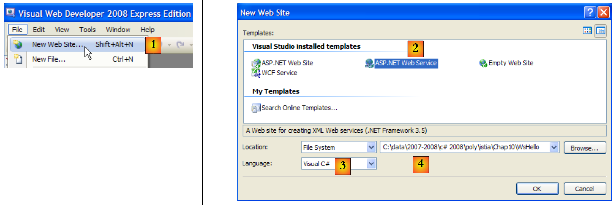
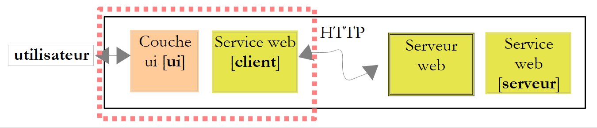
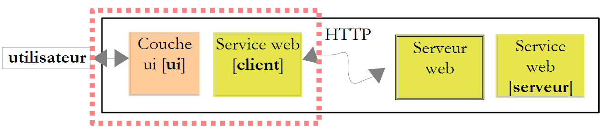
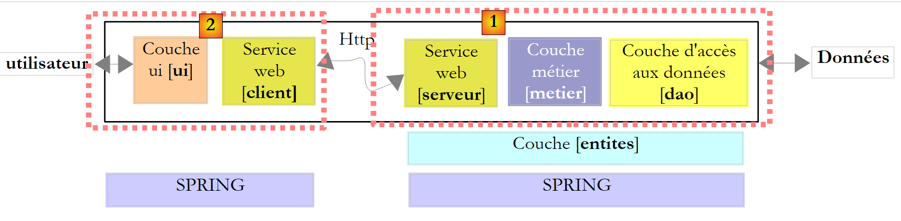
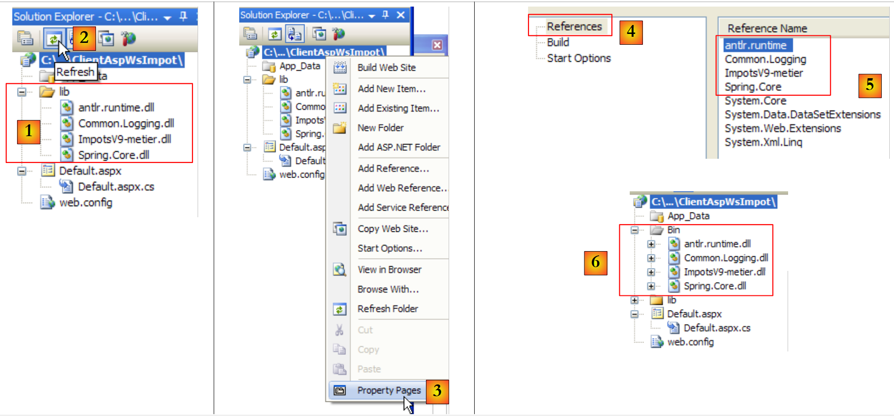
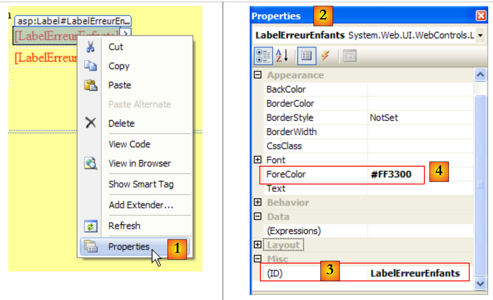

12. خدمات الويب
12.1. مقدمة
في الفصل السابق، قدمنا عدة تطبيقات خادم-عميل Tcp-Ip. وبما أن العميل والخادم يتبادلان سطور النص، فيمكن كتابتهما بأي لغة. ويحتاج العميل ببساطة إلى معرفة بروتوكول الحوار الذي يتوقعه الخادم.
تعد خدمات الويب أيضًا تطبيقات خادم Tcp-Ip. وتتميز بالخصائص التالية:
- يتم استضافتها بواسطة خوادم الويب، وبروتوكول التبادل بين العميل والخادم هو HTTP (بروتوكول نقل النص التشعبي)، وهو بروتوكول فوق TCP-IP.
- تتمتع خدمة الويب ببروتوكول حوار قياسي، بغض النظر عن الخدمة المقدمة. تقدم خدمة الويب خدمات متنوعة S1، S2، ..، Sn. يتوقع كل منها معلمات مقدمة من العميل، ويعيد نتيجة إلى العميل. بالنسبة لكل خدمة، يحتاج العميل إلى معرفة:
- الاسم الدقيق للقسم إذا
- قائمة المعلمات المطلوب توفيرها ونوعها
- نوع النتيجة التي تعيدها الخدمة
بمجرد معرفة هذه العناصر، يتبع الحوار بين العميل والخادم نفس التنسيق، بغض النظر عن خدمة الويب التي يتم الاستعلام عنها. وبهذه الطريقة، يتم توحيد كتابة العميل.
- لأسباب أمنية تحوطية ضد الهجمات القادمة من الإنترنت، تمتلك العديد من المؤسسات شبكات خاصة ولا تفتح سوى منافذ معينة على خوادمها للإنترنت: وبشكل أساسي المنفذ 80 الخاص بخدمة الويب. أما جميع المنافذ الأخرى فهي مغلقة. يتم إنشاء تطبيقات العميل-الخادم، مثل تلك التي تم عرضها في الفصل السابق، داخل الشبكة الخاصة (الإنترانت) ولا يمكن الوصول إليها عمومًا من الخارج. أما استضافة خدمة على خادم ويب فتجعلها متاحة لمجتمع الإنترنت بأكمله.
- يمكن نمذجة خدمة الويب ككائن بعيد. ثم تصبح الخدمات المقدمة طرقًا لهذا الكائن. يمكن للعميل الوصول إلى هذا الكائن البعيد كما لو كان محليًا. هذا يخفي طبقة اتصال الشبكة بالكامل ويسمح لك ببناء عميل مستقل عن هذه الطبقة. إذا تغيرت طبقة الشبكة، فلن يحتاج العميل إلى التعديل.
- كما هو الحال مع تطبيقات الخادم-العميل Tcp-Ip التي تم عرضها في الفصل السابق، يمكن كتابة العميل والخادم بأي لغة. يتبادلان سطورًا من النص. تتكون هذه من جزأين:
- الرؤوس المطلوبة لبروتوكول HTTP
- نص الرسالة. بالنسبة للاستجابة من الخادم إلى العميل، تكون هذه الاستجابة بتنسيق XML (لغة الترميز القابلة للتوسيع). بالنسبة للطلب من العميل إلى الخادم، يمكن أن يتخذ نص الرسالة عدة أشكال، بما في ذلك XML. قد يكون لطلب XML الخاص بالعميل تنسيق خاص يسمى SOAP (بروتوكول الوصول البسيط إلى الكائنات). في هذه الحالة، تتبع استجابة الخادم أيضًا تنسيق SOAP.
فيما يلي بنية تطبيق العميل/الخادم القائم على خدمة الويب:
 |
هذا امتداد للبنية ثلاثية الطبقات، التي تضاف إليها فئات اتصال شبكية متخصصة. لقد صادفنا بالفعل بنية مشابهة مع تطبيق العميل/الخادم الرسومي لـ Windows Tcp d'impôts في الفقرة 11.9.1.
دعونا نوضح هذه المبادئ العامة بمثال أول.
12.2. خدمة ويب أولى باستخدام Visual Web Developer
سنقوم بإنشاء أول تطبيق عميل/خادم بالبنية المبسطة التالية:
 |
12.2.1. جانب الخادم
لقد أشرنا إلى أن خدمة الويب يتم استضافتها بواسطة خادم ويب. تندرج كتابة خدمة الويب ضمن الإطار العام لبرمجة الويب من جانب الخادم. لقد سبق لنا أن كتبنا عملاء ويب، وهو ما يعد أيضًا برمجة ويب، ولكن هذه المرة من جانب العميل. غالبًا ما يشير مصطلح برمجة الويب إلى البرمجة من جانب الخادم بدلاً من البرمجة من جانب العميل. لتطوير خدمات الويب أو، بشكل أعم، تطبيقات الويب، لا يعد Visual C# الأداة المناسبة. سنستخدم Visual Developer، أحد إصدارات Express من Visual Studio 2008 المتاحة للتنزيل [2] على [1]: [http://msdn.microsoft.com/en-fr/express/future/bb421473(en-us).aspx] (مايو 2008):
 |
- [1]: عنوان التنزيل
- [2]: علامة التبويب "التنزيلات"
- [3] : تنزيل Visual Developer 2008
لإنشاء خدمة ويب أولية، اتبع الخطوات التالية بعد تشغيل Visual Developer :
 |
- [1]: اختر الخيار "ملف / موقع ويب جديد"
- [2]: اختر خدمة ويب ASP.NET
- [3]: اختر لغة التطوير: C#
- [4]: حدد المجلد الذي تريد إنشاء المشروع فيه
 |
- [5]: المشروع الذي تم إنشاؤه في Visual Web Developer
- [6]: مجلد المشروع على القرص
يتم تنظيم تطبيق الويب على النحو التالي في Web Developer :
- جذر يحتوي على مستندات موقع الويب (صفحات الويب الثابتة Html، والصور، وصفحات الويب الديناميكية .aspx، وخدمات الويب .asmx، ...). كما يتضمن الملف [web.config]، وهو ملف التكوين لتطبيق الويب. وهو يؤدي نفس دور الملف [App.config] لتطبيقات Windows ويتم تنظيمه بنفس الطريقة.
- مجلد [App_Code] يحتوي على الفئات والواجهات من موقع الويب للتجميع.
- مجلد [App_Data] لوضع البيانات التي تستخدمها فئات [App_Code]. على سبيل المثال، قد يحتوي هذا المجلد على قاعدة بيانات SQL Server *.mdf.
[Service.asmx] هو خدمة الويب التي طلبنا إنشاؤها. وهو يحتوي فقط على السطر التالي:
<%@ WebService Language="C#" CodeBehind="~/App_Code/Service.cs" Class="Service" %>
الرمز المصدري أعلاه مخصص لخادم الويب الذي سيستضيف التطبيق. في وضع الإنتاج، يكون هذا الخادم عادةً IIS (Internet Information Server)، خادم الويب الخاص بشركة Microsoft. يقوم Visual Web Developer بتضمين خادم ويب خفيف الوزن للاستخدام في وضع التطوير. التوجيه السابق يخبر خادم الويب:
- [Service.asmx] هي خدمة ويب (التوجيه WebService)
- مكتوبة بلغة C# (السمة Language)
- وأن كود C# الخاص بخدمة الويب موجود في [~/App_Code/Service.cs] (السمة CodeBehind). وهذا هو المكان الذي سيتوجه إليه خادم الويب لتجميعه.
- أن الفئة التي تُنفِّذ خدمة الويب تُسمَّى Service (السمة Class)
فيما يلي كود C# [Service.cs] لخدمة الويب التي تم إنشاؤها بواسطة Visual Developer:
using System.Web.Services;
[WebService(Namespace = "http://tempuri.org/")]
[WebServiceBinding(ConformsTo = WsiProfiles.BasicProfile1_1)]
// To allow this Web Service to be called from script, using ASP.NET AJAX, uncomment the following line.
// [System.Web.Script.Services.ScriptService]
public class Service : System.Web.Services.WebService
{
public Service () {
//Uncomment the following line if using designed components
//InitializeComponent();
}
[WebMethod]
public string HelloWorld() {
return "Hello World";
}
}
تشبه فئة Service فئة C# الكلاسيكية، ولكن مع بعض النقاط التي يجب ملاحظتها:
- السطر 7: الفئة مشتقة من WebService المحددة في System.Web.Services. هذا التوريث ليس إلزاميًا دائمًا. في هذا المثال على وجه الخصوص، يمكن الاستغناء عنه.
- السطر 3: تسبق الفئة نفسها سمة [WebService(Namespace="http://tempuri.org/")] تهدف إلى إعطاء مساحة اسم لخدمة الويب. يمنح مورد الفئة مساحة اسم لفئاته من أجل إعطائها اسمًا فريدًا وتجنب التعارض مع فئات من موردين آخرين قد تحمل الاسم نفسه. وينطبق الأمر نفسه على خدمات الويب. يجب تحديد كل خدمة ويب باسم فريد، وهو هنا http://tempuri.org/. يمكن أن يكون هذا الاسم أي شيء. ولا يجب أن يكون عنوان Uri Http.
- السطر 15: تسبق الطريقة HelloWorld علامة [WebMethod] التي تخبر المُجمِّع أن الطريقة يجب أن تكون مرئية للعملاء البعيدين لخدمة الويب. الطريقة التي لا تسبقها هذه السمة لا تكون مرئية لعملاء خدمة الويب. قد تكون هذه طريقة داخلية تستخدمها طرق أخرى، ولكنها غير مخصصة للنشر.
- السطر 9: منشئ الخدمة web. إنه عديم الفائدة في تطبيقنا.
يتم تحويل فئة [Service.cs] التي تم إنشاؤها على النحو التالي:
using System.Web.Services;
[WebService(Namespace = "http://st.istia.univ-angers.fr")]
[WebServiceBinding(ConformsTo = WsiProfiles.BasicProfile1_1)]
public class Service : System.Web.Services.WebService
{
[WebMethod]
public string DisBonjourALaDame(string nomDeLaDame) {
return string.Format("Bonjour Mme {0}", nomDeLaDame);
}
}
ملف التكوين [web.config] الذي تم إنشاؤه لتطبيق الويب هو كما يلي:
<?xml version="1.0"?>
<!--
Note: As an alternative to hand editing this file you can use the
web admin tool to configure settings for your application. Use
the Website->Asp.Net Configuration option in Visual Studio.
A full list of settings and comments can be found in
machine.config.comments usually located in
\Windows\Microsoft.Net\Framework\v2.x\Config
-->
<configuration>
<configSections>
<sectionGroup name="system.web.extensions" type="System.Web.Configuration.SystemWebExtensionsSectionGroup, System.Web.Extensions, Version=3.5.0.0, Culture=neutral, PublicKeyToken=31BF3856AD364E35">
...
</sectionGroup>
</configSections>
<appSettings/>
<connectionStrings/>
...
</configuration>
يبلغ طول الملف 140 سطراً. وهو معقد ولن نعلق عليه. سنبقيه كما هو. أعلاه توجد العناصر <configuration> و<configSections> و<sectionGroup> و<appSettings> و<connectionString> التي صادفناها في ملف [App.config] لتطبيقات Windows.
لدينا خدمة ويب جاهزة للتشغيل يمكن تشغيلها:
 |
- [1،2]: انقر بزر الماوس الأيمن على [Service.asmx] واطلب عرض الصفحة في متصفح
- [3]: يقوم Visual Web Developer بتشغيل خادم الويب المدمج الخاص به ووضع أيقونته في الزاوية اليمنى السفلية من شريط المهام. يتم تشغيل خادم الويب على منفذ عشوائي، هنا 1906. عنوان Uri المعروض /WsHello هو اسم موقع الويب [4].
كما قام Visual Web Developer بتشغيل متصفح لعرض الصفحة المطلوبة، وهي [Service.asmx]:
 |
- في [1]، عنوان Uri للصفحة. نجد عنوان Uri للموقع [http://localhost:1906/WsHello] متبوعًا بعنوان الصفحة /Service.asmx.
- في [2]، أبلغت اللاحقة .asmx خادم الويب أن هذه ليست صفحة ويب عادية (اللاحقة .aspx) تؤدي إلى صفحة Html، بل صفحة خدمة ويب. ثم يقوم تلقائيًا بإنشاء صفحة ويب تحتوي على رابط لكل طريقة من طرق خدمة الويب مع السمة [WebMethod]. تتيح لك هذه الروابط اختبار الطرق.
انقر على الرابط [2] أعلاه للانتقال إلى الصفحة التالية:
 |
- في [1]، لاحظ عنوان Uri [http://localhost:1906/WsHello/Service.asmx?op=DisBonjourALaDame] للصفحة الجديدة. هذا هو عنوان Uri لخدمة الويب، مع معلمة واحدة op=M، حيث M هو اسم إحدى طرق خدمة الويب.
- تذكر توقيع طريقة [DisBonjourALaDame]:
public string DisBonjourALaDame(string nomDeLaDame) ;
تقبل هذه الطريقة معلمة من نوع string وتُرجع سلسلة أيضًا. تتيح لنا الصفحة تنفيذ الطريقة [DisBonjourALaDame]: في [2] نحدد قيمة المعلمة nomDeLaDame وفي [3] نطلب تنفيذ الطريقة. نحصل على النتيجة التالية:
 |
- في [1]، لاحظ أن عنوان Uri في الاستجابة ليس مطابقًا للعنوان الموجود في الطلب. فقد تغير.
- في [2]، استجابة الخادم web. يرجى ملاحظة النقاط التالية:
- إنها إجابة XML، وليست HTML
- نتيجة طريقة [DisBonjourALaDame] مغلفة في علامة <string> تمثل نوعها.
- تحتوي علامة <string> على سمة xmlns (مساحة اسم xml)، وهي مساحة الاسم التي أعطيناها لخدمة الويب الخاصة بنا (السطر 1 أدناه).
[WebService(Namespace = "http://st.istia.univ-angers.fr")]
[WebServiceBinding(ConformsTo = WsiProfiles.BasicProfile1_1)]
public class Service : System.Web.Services.WebService
لمعرفة كيفية قيام متصفح الويب بإرسال طلبه، انظر إلى كود HTML في نموذج الاختبار:
- السطر 11: سيتم إرسال قيم النموذج (العلامة form) (السمة method) إلى عنوان URL [ http://localhost:1906/WsHello/Service.asmx/DisBonjourALaDame] (السمة action).
- السطر 19: يُسمى حقل الإدخال nomDeLaDame (السمة name).
وقد أتاح لنا طلب تشغيل خدمة الويب [/Service.asmx] اختبار أساليبها واكتساب فهم أولي للتبادلات بين العميل والخادم.
12.2.2. قسم العملاء
 |
من الممكن تنفيذ عميل خدمة الويب البعيدة المذكور أعلاه باستخدام عميل Tcp-Ip أساسي. على سبيل المثال، إليك حوار العميل/الخادم الذي تم إنشاؤه باستخدام عميل putty متصل بخدمة الويب البعيدة (localhost,1906) :
- الأسطر 1-5: رسائل أرسلها العميل putty
- السطر 1: أمر POST
- الأسطر 6-10: استجابة الخادم. هذا يعني أن العميل يمكنه إرسال قيم POST.
- السطر 11: القيم المرسلة في النموذج param1=val1¶m2=val2& .... يجب أن تكون بعض الأحرف من الأحرف المقبولة في عنوان URL. وهذا ما كنا نسميه سابقًا عنوان URL مشفر. هنا يحتوي النموذج على معلمة واحدة باسم nomDeLaDame. يبلغ إجمالي عدد أحرف القيمة المرسلة 23 حرفًا. يجب الإعلان عن هذا الحجم في رأس Http في السطر 4.
- الأسطر 12-22: استجابة الخادم
- السطر 22: نتيجة طريقة الويب [DisBonjourALaDame].
باستخدام Visual C#، يمكنك استخدام معالج لإنشاء عميل لخدمة ويب بعيدة. وهذا ما سنراه الآن.
 |
يتم تنفيذ الطبقة [1] أعلاه بواسطة مشروع Visual Studio C# من نوع تطبيق Windows ويسمى ClientWsHello :
 |
- في [1]، ClientWsHello في Visual C#
- في [2]، سيكون مساحة الاسم الافتراضية للمشروع هي Customer (انقر بزر الماوس الأيمن على المشروع / خصائص / التطبيق). ستُستخدم مساحة الاسم هذه لإنشاء مساحة اسم العميل التي سيتم إنشاؤها.
- في [3]، انقر بزر الماوس الأيمن على المشروع لإضافة مرجع إلى خدمة ويب بعيدة
 |
- في [4]، قم بتعيين عنوان Uri لخدمة الويب التي تم إنشاؤها مسبقًا
- في [4b]، قم بتوصيل Visual C# بخدمة الويب المحددة في [4]. سيقوم Visual C# باسترداد وصف خدمة الويب واستخدامه لإنشاء عميل.
- في [5]، بمجرد استرداد وصف خدمة الويب، يمكن لـ Visual C# عرض أساليبها العامة
- في [6]، حدد مساحة اسم للعميل المراد إنشاؤه. سيتم إضافة هذه إلى مساحة الاسم المحددة في [2]. وبهذه الطريقة، ستكون مساحة اسم العميل هي Client.WsHello.
- في [6b] للتحقق من صحة المعالج.
- في [7]، تظهر الإشارة إلى خدمة الويب WsHello في المشروع. بالإضافة إلى ذلك، تم إنشاء ملف تكوين [app.config].
- في [8]، اعرض جميع ملفات المشروع.
- في [9]، تحتوي الإشارة إلى خدمة الويب WsHello على ملفات متنوعة لن نتطرق إليها هنا. ومع ذلك، سنلقي نظرة على ملف [Reference.cs]، وهو كود C# للعميل الذي تم إنشاؤه:
namespace Client.WsHello {
...
public partial class ServiceSoapClient : System.ServiceModel.ClientBase<Client.WsHello.ServiceSoap>, Client.WsHello.ServiceSoap {
public ServiceSoapClient() {
}
...
public string DisBonjourALaDame(string nomDeLaDame) {
Client.WsHello.DisBonjourALaDameRequest inValue = new Client.WsHello.DisBonjourALaDameRequest();
inValue.Body = new Client.WsHello.DisBonjourALaDameRequestBody();
inValue.Body.nomDeLaDame = nomDeLaDame;
Client.WsHello.DisBonjourALaDameResponse retVal = ((Client.WsHello.ServiceSoap)(this)).DisBonjourALaDame(inValue);
return retVal.Body.DisBonjourALaDameResult;
}
}
}
- السطر 1: مساحة اسم العميل التي تم إنشاؤها هي Client.WsHello. إذا كنت ترغب في تغيير مساحة الاسم هذه، فهذا هو المكان المناسب للقيام بذلك.
- السطر 3: الفئة ServiceSoapClient هي فئة العميل التي تم إنشاؤها. وهي فئة وكيلة بمعنى أنها ستخفي عن تطبيق Windows حقيقة استخدام خدمة ويب بعيدة. سيستخدم تطبيق Windows WsHello عبر الفئة المحلية Client.WsHello.ServiceSoapClient. لإنشاء مثيل للعميل، استخدم المنشئ في السطر 5:
- السطر 8: الطريقة DisBonjourALaDame هي النظير من جانب العميل لخدمة الويب DisBonjourALaDame. سيستخدم تطبيق Windows الطريقة البعيدة DisBonjourALaDame عبر الطريقة المحلية Client.WsHello.ServiceSoapClient.DisBonjourALaDame بالشكل التالي:
ملف [app.config] الذي تم إنشاؤه هو كما يلي:
<?xml version="1.0" encoding="utf-8" ?>
<configuration>
<system.serviceModel>
<bindings>
....
</bindings>
<client>
<endpoint address="http://localhost:1906/WsHello/Service.asmx"... />
</client>
</system.serviceModel>
</configuration>
من هذا الملف، سنحتفظ فقط بالسطر 8، الذي يحتوي على عنوان Uri لخدمة الويب. إذا تغير عنوان Uri هذا، فلن تكون هناك حاجة لإعادة بناء عميل Windows. ما عليك سوى تغيير عنوان Uri في ملف [app.config].
لنعد إلى بنية تطبيق Windows الذي نريد إنشاؤه:
 |
لقد قمنا ببناء طبقة [client] لخدمة الويب. وستكون طبقة [ui] كما يلي:
 |
رقم | النوع | الاسم | الدور |
1 | مربع نص | textBoxNomDame | اسم السيدة |
2 | زر | زر التحية | للاتصال بخدمة الويب WsHello عن بُعد واستدعاء طريقة DisBonjourALaDame. |
3 | تسمية | تسمية Bonjour | النتيجة التي تعيدها خدمة الويب |
رمز النموذج [Form1.cs] هو كما يلي:
using System;
using System.Windows.Forms;
using Client.WsHello;
namespace ClientSalutations {
public partial class Form1 : Form {
public Form1() {
InitializeComponent();
}
private void buttonSalutations_Click(object sender, EventArgs e) {
// hourglass
Cursor=Cursors.WaitCursor;
// web query service
labelBonjour.Text = new ServiceSoapClient().DisBonjourALaDame(textBoxNomDame.Text.Trim());
// normal slider
Cursor = Cursors.Arrow;
}
}
}
- السطر 15: يتم إنشاء مثيل لعميل خدمة الويب. وهو من النوع Client.WsHello.ServiceSoapClient. وقد تم تعريف مساحة الاسم Client.WsHello في السطر 3. يتم استدعاء الدالة المحلية ServiceSoapClient().DisBonjourALaDame. ونعلم أنها تستدعي الدالة البعيدة التي تحمل الاسم نفسه في خدمة الويب.
12.3. خدمة العمليات الحسابية على الويب
سنقوم بإنشاء تطبيق عميل/خادم ثانٍ بالبنية المبسطة التالية:
 |
قدمت خدمة الويب السابقة طريقة واحدة. ونحن ننظر في خدمة ويب ستقدم 4 عمليات حسابية:
- ajouter(a,b) التي ستعطي a+b
- soustraire(a,b) التي ستُنتج a-b
- multiplier(a,b) التي ستنتج a*b
- diviser(a,b) التي ستنتج a/b
والتي سيتم الاستعلام عنها من خلال الواجهة الرسومية التالية:
 |
- في [1]، العملية المطلوب إجراؤها
- في [2،3]: المعاملات
- في [4]، زر استدعاء الخدمة على الويب
- في [5]، نتيجة خدمة الويب
12.3.1. جانب الخادم
نقوم بإنشاء مشروع خدمة ويب باستخدام Visual Web Developer :
 |
- في [1]، تم إنشاء تطبيق الويب WsOperations
- في [2]، تم إعادة تصميم تطبيق الويب WsOperations على النحو التالي:
- تمت إعادة تسمية صفحة الويب [Service.asmx] إلى [Operations.asmx]
- تم تغيير اسم فئة [Service.cs] إلى [Operations.cs]
- تمت إزالة ملف [web.config] لإظهار أنه ليس ضروريًا.
تحتوي صفحة الويب [Service.asmx] على السطر التالي:
<%@ WebService Language="C#" CodeBehind="~/App_Code/Operations.cs" Class="Operations" %>
يتم توفير خدمة الويب بواسطة الفئة التالية [Operations.cs]:
using System.Web.Services;
[WebService(Namespace = "http://st.istia.univ-angers.fr/")]
[WebServiceBinding(ConformsTo = WsiProfiles.BasicProfile1_1)]
public class Operations : System.Web.Services.WebService
{
[WebMethod]
public double Ajouter(double a, double b)
{
return a + b;
}
[WebMethod]
public double Soustraire(double a, double b)
{
return a - b;
}
[WebMethod]
public double Multiplier(double a, double b)
{
return a * b;
}
[WebMethod]
public double Diviser(double a, double b)
{
return a / b;
}
}
لتشغيل خدمة الويب، نتبع الخطوات الموضحة في [3]. ثم نحصل على صفحة الاختبار الخاصة بالطرق الأربع لخدمة الويب WsOperations :

ندعو القراء لتجربة الطرق الأربع جميعها.
12.3.2. قسم العملاء
 |
باستخدام Visual C#، نقوم بإنشاء تطبيق Windows ClientWsOperations :
 |
- في [1]، ClientWsOperations في Visual C#
- في [2]، سيكون اسم الفضاء الافتراضي للمشروع هو Customer (انقر بزر الماوس الأيمن على المشروع / خصائص / التطبيق). سيتم استخدام اسم الفضاء هذا لإنشاء اسم الفضاء الخاص بالعميل الذي سيتم إنشاؤه.
- في [3]، انقر بزر الماوس الأيمن على المشروع لإضافة مرجع إلى خدمة ويب موجودة
 |
- في [4]، قم بتعيين عنوان Uri لخدمة الويب التي تم إنشاؤها مسبقًا. للقيام بذلك، انظر إلى ما يظهر في حقل العنوان بالمتصفح الذي يعرض صفحة اختبار خدمة الويب.
- في [4b]، قم بتوصيل Visual C# بخدمة الويب المحددة في [4]. سيقوم Visual C# باسترداد وصف خدمة الويب واستخدامه لإنشاء عميل.
- في [5]، بمجرد استرداد وصف خدمة الويب، يمكن لـ Visual C# عرض أساليبها العامة
- في [6]، حدد مساحة اسم للعميل المراد إنشاؤه. ستُضاف هذه إلى مساحة الاسم المحددة في [2]. وبهذه الطريقة، ستكون مساحة اسم العميل هي Client.WsOperations.
- في [6b] للتحقق من صحة المعالج.
- في [7]، تظهر الإشارة إلى خدمة الويب WsOperations في المشروع. بالإضافة إلى ذلك، تم إنشاء ملف تكوين [app.config].
تذكر أن العميل الذي تم إنشاؤه هو من النوع Client.WsOperations.OperationsSoapClient حيث
- Client.WsOperations هو مساحة اسم خدمة عميل الويب
- Operations هي فئة خدمة الويب البعيدة.
على الرغم من وجود طريقة منطقية لإنشاء هذا الاسم، غالبًا ما يكون من الأسهل العثور عليه في ملف [Reference.cs]، وهو ملف مخفي افتراضيًا. ومحتوياته كما يلي:
namespace Client.WsOperations {
...
public partial class OperationsSoapClient : System.ServiceModel.ClientBase<Client.WsOperations.OperationsSoap>, Client.WsOperations.OperationsSoap {
public OperationsSoapClient() {
}
...
public double Ajouter(double a, double b) {
...
}
public double Soustraire(double a, double b) {
...
}
public double Multiplier(double a, double b) {
...
}
public double Diviser(double a, double b) {
...
}
}
}
سيتم الوصول إلى طرق Add و Subtract و Multiply و Divide الخاصة بخدمة الويب البعيدة عبر طرق الوكيل التي تحمل نفس الاسم (الأسطر 8 و 12 و 16 و 20) الخاصة بالعميل من النوع Client.WsOperations.OperationsSoapClient (السطر 3).
كل ما تبقى هو إنشاء الواجهة الرسومية:
 |
رقم | النوع | الاسم | الدور |
1 | مربع القائمة المنسدلة | عمليات قائمة المنسدلة | قائمة العمليات الحسابية |
2 | مربع النص | textBoxA | رقم أ |
3 | مربع نص | مربع النص ب | رقم ب |
4 | زر | زر التنفيذ | يستطلع خدمة الويب البعيدة |
5 | تسمية | labelResult | نتيجة العملية |
فيما يلي كود [Form1.cs]:
using System;
using System.Windows.Forms;
using Client.WsOperations;
namespace ClientWsOperations {
public partial class Form1 : Form {
// operations table
private string[] opérations = { "Ajouter", "Soustraire", "Multiplier", "Diviser" };
// department web to contact
private OperationsSoapClient opérateur = new OperationsSoapClient();
// manufacturer
public Form1() {
InitializeComponent();
}
private void Form1_Load(object sender, EventArgs e) {
// combo filling of operations
comboBoxOperations.Items.AddRange(opérations);
comboBoxOperations.SelectedIndex = 0;
}
private void buttonExécuter_Click(object sender, EventArgs e) {
// checking operation parameters a and b
textBoxMessage.Text = "";
bool erreur = false;
Double a = 0;
if (!Double.TryParse(textBoxA.Text, out a)) {
textBoxMessage.Text += "Nombre a erroné...";
}
Double b = 0;
if (!Double.TryParse(textBoxB.Text, out b)) {
textBoxMessage.Text += String.Format("{0}Nombre b erroné...", Environment.NewLine);
}
if (erreur) {
return;
}
// operation execution
Double c=0;
try {
switch (comboBoxOperations.SelectedItem.ToString()) {
case "Ajouter":
c=opérateur.Ajouter(a, b);
break;
case "Soustraire":
c=opérateur.Soustraire(a, b);
break;
case "Multiplier":
c=opérateur.Multiplier(a, b);
break;
case "Diviser":
c=opérateur.Diviser(a, b);
break;
}
// result display
labelRésultat.Text = c.ToString();
} catch (Exception ex) {
textBoxMessage.Text = ex.Message;
}
}
}
}
- السطر 3: مساحة اسم عميل خدمة الويب البعيدة
- السطر 10: يتم إنشاء مثيل عميل خدمة الويب البعيدة في نفس وقت إنشاء النموذج
- الأسطر 17-21: يتم ملء قائمة العمليات المنسدلة عند تحميل النموذج لأول مرة
- السطر 23: تنفيذ العملية التي طلبها المستخدم
- الأسطر 25-37: التحقق من أن المدخلتين a و b أرقام حقيقية
- الأسطر 41-54: مفتاح لتنفيذ العملية البعيدة التي طلبها المستخدم
- الأسطر 43 و46 و49 و52: يتم الاستعلام عن العميل المحلي. وبشكل شفاف، يقوم بالاستعلام عن خدمة الويب البعيدة.
12.4. خدمة حساب الضرائب على الويب
لقد عدنا إلى تطبيق حساب الضرائب الذي أصبح معروفًا الآن. في المرة الأخيرة التي عملنا فيه، جعلناه خادم Tcp عن بُعد يمكن استدعاؤه عبر الإنترنت. وقد حولناه الآن إلى خدمة ويب.
كانت بنية الإصدار 8 كما يلي:
 |
وستكون بنية الإصدار 9 مشابهة:
 |
هذه البنية مشابهة لتلك الموجودة في الإصدار 8، الموصوفة في الفقرة 11.9.1، ولكن حيث يتم استبدال خادم وعميل Tcp بشبكة خدمة وعميلها الوكيل. سنقوم بتبني طبقات [ui] و[metier] و[dao] بالكامل من الإصدار 8.
12.4.1. جانب الخادم
نقوم بإنشاء مشروع خدمة ويب باستخدام Visual Web Developer :
 |
- في [1]، تم إنشاء تطبيق الويب WsImpot
- في [2]، تم إعادة تصميم تطبيق الويب WsImpot على النحو التالي:
- تمت إعادة تسمية صفحة الويب [Service.asmx] إلى [ServiceImpot.asmx]
- تم تغيير اسم فئة [Service.cs] إلى [ServiceImpot.cs]
تحتوي صفحة الويب [ServiceImpot.asmx] على السطر التالي:
<%@ WebService Language="C#" CodeBehind="~/App_Code/ServiceImpot.cs" Class="ServiceImpot" %>
يتم توفير خدمة الويب بواسطة الفئة التالية [ServiceImpot.cs]:
using System.Web.Services;
[WebService(Namespace = "http://st.istia.univ-angers.fr/")]
[WebServiceBinding(ConformsTo = WsiProfiles.BasicProfile1_1)]
public class ServiceImpot : System.Web.Services.WebService
{
[WebMethod]
public int CalculerImpot(bool marié, int nbEnfants, int salaire)
{
return 0;
}
}
ستعرض خدمة الويب فقط CalculerImpot في السطر 9.
لنعد إلى بنية العميل/الخادم في الإصدار 8:
 |
كان مشروع Visual Studio على الخادم [1] كما يلي:
 |
- في [1]، المشروع. تضمن العناصر التالية:
- [ServeurImpot.cs]: خادم حساب الضرائب Tcp/Ip في شكل تطبيق وحدة التحكم.
- [dbimpots.sdf]: قاعدة البيانات المضغوطة لـ SQL Server من الإصدار 7 الموضحة في الفقرة 9.8.5.
- [App.config]: ملف تكوين التطبيق.
- في [2]، يحتوي المجلد [lib] على ملف DLL اللازم للمشروع:
- [ImpotsV7-dao]: طبقة [dao] في الإصدار 7
- [ImpotsV7-metier]: طبقة [metier] في الإصدار 7
- [antlr.runtime، CommonLogging، Spring.Core] لـ Spring
- في [3]، يشير المشروع إلى
طبقات [metier] و [dao] الخاصة بالإصدار موجودة بالفعل: وهي تلك المستخدمة في الإصدارين 7 و 8. وهي في شكل DLL، والتي ندمجها في المشروع على النحو التالي:
 |
- في [1] تم نسخ مجلد [lib] الخاص بخادم الإصدار 8 إلى مشروع خدمة الويب الخاص بالإصدار 9.
- في [2] نقوم بتعديل خصائص الصفحة لإضافة ملف DLL من مجلد [lib] [4] إلى مراجع المشروع [3].
بعد هذه العملية، أصبح لدينا جميع الطبقات المطلوبة للخادم [1] أدناه:
 |
بينما عناصر الخادم [1] و[server] و[metier] و[dao] و[entities] و[spring] موجودة جميعها في مشروع Visual Studio، فإننا نفتقد العنصر الذي سيقوم بإنشاء مثيلات لها عند بدء تشغيل تطبيق الويب. في الإصدار 8، قامت فئة رئيسية تحتوي على الطريقة الثابتة [Main] بمهمة إنشاء مثيلات للطبقات بمساعدة Spring. في تطبيق الويب، الفئة القادرة على القيام بمهمة مماثلة هي الفئة المرتبطة بـ [ Global.asax]:
 |
- في [1]، تمت إضافة عنصر جديد إلى مشروع الويب
- في [2]، نختار فئة التطبيق العام
- في [3]، الاسم الافتراضي المقترح لهذا العنصر
- في [4]، نقوم بالتحقق من صحة إضافة
- في [5]، تم دمج العنصر الجديد في
دعونا نلقي نظرة على محتويات ملف [Global.asax]:
<%@ Application Language="C#" %>
<script runat="server">
void Application_Start(object sender, EventArgs e)
{
// Code that runs on application startup
}
void Application_End(object sender, EventArgs e)
{
// Code that runs on application shutdown
}
void Application_Error(object sender, EventArgs e)
{
// Code that runs when an unhandled error occurs
}
void Session_Start(object sender, EventArgs e)
{
// Code that runs when a new session is started
}
void Session_End(object sender, EventArgs e)
{
// Code that runs when a session ends.
}
</script>
الملف عبارة عن مزيج من علامات خادم الويب (الأسطر 1 و 3 و 30) ورمز C#. كانت هذه هي الطريقة الوحيدة المستخدمة مع ASP، سلف ASP.NET، وهي التقنية الحالية التي تستخدمها Microsoft لبرمجة الويب. مع ASP.NET، لا يزال من الممكن استخدام هذه الطريقة، ولكنها ليست الطريقة الافتراضية. الطريقة الافتراضية هي طريقة "CodeBehind"، التي رأيناها في صفحات خدمات الويب، على سبيل المثال هنا في [ServiceImpot.asmx]:
<%@ WebService Language="C#" CodeBehind="~/App_Code/ServiceImpot.cs" Class="ServiceImpot" %>
تحدد CodeBehind موقع شفرة المصدر لصفحة [ServiceImpot.asmx]. بدون هذه السمة، ستكون شفرة المصدر في صفحة [ServiceImpot.asmx] بنحو مشابه لتلك الموجودة في [Global.asax]. لن نحتفظ بملف [Global.asax] كما تم إنشاؤه، لكن شفرته تسمح لنا بفهم الغرض منه:
- يتم إنشاء مثيل للفئة المرتبطة بـ Global.asax عند بدء تشغيل التطبيق. وتستمر مدة وجودها طوال مدة وجود التطبيق بأكمله. وبعبارة محددة، لا تختفي إلا عند إيقاف تشغيل خادم الويب.
- يتم بعد ذلك تنفيذ الأسلوب Application_Start. هذه هي المرة الوحيدة التي سيتم فيها تنفيذه. لذلك يتم استخدامه لإنشاء مثيلات للكائنات المشتركة بين جميع المستخدمين. يتم وضع هذه الكائنات:
- أو في الحقول الثابتة للفئة المرتبطة بـ Global.asax. ونظرًا لأن هذه الفئة موجودة بشكل دائم، يمكن لأي طلب من أي مستخدم قراءة المعلومات منها.
- أو في الحاوية Application. يتم إنشاء هذه الحاوية أيضًا عند بدء تشغيل التطبيق، وتستمر طوال مدة عمل التطبيق.
- لوضع البيانات في هذه الحاوية، نكتب Application["key"]=value;
- لاستردادها، نكتب T value=(T)Application["key"]; حيث T هو نوع القيمة.
- يتم تنفيذ الطريقة Session_Start في كل مرة يقوم فيها مستخدم جديد بتقديم طلب. كيف نتعرف على مستخدم جديد؟ يتلقى كل مستخدم (عادةً متصفح) رمز جلسة، وهو سلسلة من الأحرف الفريدة لكل مستخدم. في كل مرة يتم فيها تقديم طلب جديد، يرسل المستخدم رمز الجلسة الذي تلقّاه. وهذا يمكّن خادم الويب من التعرف على المستخدم. خلال الطلبات المختلفة للمستخدم، قد يتم تخزين البيانات الخاصة بهذا المستخدم في Session :
- لوضع البيانات في هذا الحاوية، نكتب Session["key"]=value;
- لاستردادها، نكتب T value=(T)Session["key"]; حيث T هو نوع القيمة.
بشكل افتراضي، تقتصر مدة الجلسة على 20 دقيقة من عدم نشاط المستخدم (أي أن المستخدم لم يرسل رمز الجلسة الخاص به لمدة 20 دقيقة).
- يتم تنفيذ الطريقة Application_Error عندما يتم إرسال استثناء لم يتم معالجته بواسطة تطبيق الويب إلى خادم الويب.
- نادرًا ما تُستخدم الطرق الأخرى.
بعد هذه المعلومات العامة، ماذا يمكننا أن نفعل من أجلك؟ Global.asax؟ سنستخدم طريقة Application_Start الخاصة به لتهيئة طبقات [metier] و[dao] و[entites] الموجودة في مكتبة DLL [ImpotsV7-metier، ImpotsV7-dao]. سنستخدم Spring لإنشاء مثيلات لها. سيتم بعد ذلك تخزين مراجع الطبقات التي تم إنشاؤها بهذه الطريقة في حقول ثابتة في الفئة المرتبطة بـ Global.asax.
في الخطوة الأولى، نقوم بنقل كود C# من ملف Global.asax إلى فئة مستقلة. ويتطور المشروع على النحو التالي:
 |
في [1]، سيتم ربط الملف [Global.asax] بالفئة [Global.cs] [2] بالسطر الوحيد التالي:
<%@ Application Language="C#" Inherits="WsImpot.Global"%>
يشير Inherits="WsImpot.Global" إلى أن الفئة المرتبطة بـ Global.asax ترث من WsImpot.Global. يتم تعريف هذه الفئة في [Global.cs] على النحو التالي:
using System;
using Metier;
using Spring.Context.Support;
namespace WsImpot
{
public class Global : System.Web.HttpApplication
{
// business layer
public static IImpotMetier Metier;
// method executed at application startup
private void Application_Start(object sender, EventArgs e)
{
// instantiations [metier] and [dao] layers
Metier = ContextRegistry.GetContext().GetObject("metier") as IImpotMetier;
}
}
}
- السطر 4: مساحة اسم الفئة
- السطر 6: الفئة Global. يمكنك تسميتها بأي اسم تريده. المهم هو أنها مشتقة من System.Web.HttpApplication.
- السطر 9: حقل عام ثابت يحتوي على مرجع إلى طبقة [metier].
- السطر 12: الطريقة Application_Start التي سيتم تنفيذها عند بدء تشغيل التطبيق.
- السطر 15: يُستخدم Spring لاستغلال ملف [web.config]، حيث سيجد الكائنات التي سيتم إنشاء مثيلات لها لإنشاء طبقات [metier] و[dao]. لا يوجد فرق بين استخدام Spring مع [App.config] في تطبيق Windows، واستخدام Spring مع [web.config] في تطبيق ويب. كما أن [web.config] و[App.config] لهما نفس البنية. يخزن السطر 15 مرجع طبقة [metier] في الحقل الثابت في السطر 9، بحيث يكون هذا المرجع متاحًا لجميع الاستعلامات من جميع المستخدمين.
سيكون ملف [web.config] كما يلي:
<?xml version="1.0" encoding="utf-8" ?>
<configuration>
<configSections>
<sectionGroup name="spring">
<section name="context" type="Spring.Context.Support.ContextHandler, Spring.Core" />
<section name="objects" type="Spring.Context.Support.DefaultSectionHandler, Spring.Core" />
</sectionGroup>
</configSections>
<spring>
<context>
<resource uri="config://spring/objects" />
</context>
<objects xmlns="http://www.springframework.net">
<object name="dao" type="Dao.DataBaseImpot, ImpotsV7-dao">
<constructor-arg index="0" value="MySql.Data.MySqlClient"/>
<constructor-arg index="1" value="Server=localhost;Database=bdimpots;Uid=admimpots;Pwd=mdpimpots;"/>
<constructor-arg index="2" value="select limite, coeffr, coeffn from tranches"/>
</object>
<object name="metier" type="Metier.ImpotMetier, ImpotsV7-metier">
<constructor-arg index="0" ref="dao"/>
</object>
</objects>
</spring>
</configuration>
هذا هو ملف [App.config] المستخدم في الإصدار 7 من التطبيق والذي تمت دراسته في الفقرة 9.8.4.
- الأسطر 16-20: تحدد طبقة [dao] تعمل مع قاعدة بيانات MySQL5. تم وصف قاعدة البيانات هذه في الفقرة 9.8.1.
- الأسطر 21-23: تحدد طبقة [metier]
العودة إلى لغز الخادم:
 |
عند بدء تشغيل التطبيق، يتم إنشاء مثيلات لطبقتي [metier] و[dao]. وتستمر هذه الطبقات طوال فترة عمل التطبيق نفسه. متى يتم إنشاء مثيل لخدمة الويب؟ في كل مرة يتم إرسال طلب إليها. في نهاية الطلب، يتم حذف الكائن الذي خدمه. لذا، للوهلة الأولى، تكون خدمة الويب عديمة الحالة. لا يمكنها تخزين المعلومات بين طلبين في الحقول التي تنتمي إليها. يمكنها تخزين المعلومات في جلسة عمل المستخدم. للقيام بذلك، يجب تمييز الطرق التي تعرضها بعلامة خاصة:
[WebMethod(EnableSession=true)]
public int CalculerImpot(bool marié, int nbEnfants, int salaire)
....
في الأعلى، تسمح السطر 1 لـ CalculerImpot بالوصول إلى الحاوية Session التي ذكرناها سابقًا. لن نحتاج إلى استخدام هذه السمة في تطبيقنا. وبالتالي، سيتم إنشاء مثيل لخدمة الويب WsImpot عند كل طلب وستكون عديمة الحالة.
يمكننا الآن كتابة الكود [ServiceImpot.cs] الذي ينفذ خدمة الويب:
using System.Web.Services;
using WsImpot;
[WebService(Namespace = "http://st.istia.univ-angers.fr/")]
[WebServiceBinding(ConformsTo = WsiProfiles.BasicProfile1_1)]
public class ServiceImpot : System.Web.Services.WebService
{
[WebMethod]
public int CalculerImpot(bool marié, int nbEnfants, int salaire)
{
return Global.Metier.CalculerImpot(marié, nbEnfants, salaire);
}
}
- السطر 10: طريقة خدمة الويب الفريدة
- السطر 12: نستخدم CalculerImpot من طبقة [metier]. توجد إشارة إلى هذه الطبقة في الحقل الثابت Trade class Global. وهذا ينتمي إلى WsImpot (السطر 2).
نحن الآن جاهزون لتشغيل خدمة الويب. أولاً، نحتاج إلى تشغيل SGBD MySQL5 حتى يمكن الوصول إلى قاعدة البيانات bdimpots. بمجرد الانتهاء من ذلك، نبدأ [1] تشغيل خدمة الويب:
 |
ثم يعرض المتصفح الصفحة [2]. نتبع الرابط:
 |
نحدد قيمة لكل من المعلمات الثلاثة للطريقة CalculerImpot ونطلب تنفيذ الطريقة. نحصل على النتيجة التالية، وهي صحيحة:

12.4.2. عميل رسومي يعمل بنظام Windows لخدمة الويب عن بُعد
الآن بعد أن تمت كتابة خدمة الويب، دعونا ننتقل إلى العميل. دعونا نستعرض بنية تطبيق العميل/الخادم:
 |
نحتاج الآن إلى كتابة العميل [2]. وستكون الواجهة الرسومية مطابقة لتلك الموجودة في الإصدار 8:
 |
لكتابة جزء [العميل] من الإصدار 9، سنبدأ من جزء [العميل] من الإصدار 8، ثم نقوم بإجراء التعديلات اللازمة. نقوم بنسخ مشروع Visual Studio الذي تمت دراسته في الفقرة 11.9.4.1، ونعيد تسميته ClientWsImpot ونقوم بتحميله في Visual Studio :
 |
تألف حل Visual Studio للإصدار 8 من مشروعين:
- مشروع [metier] [1]، الذي كان عميل Tcp لخادم حساب الضرائب Tcp
- مشروع واجهة المستخدم الرسومية [ui] [2].
التغييرات المطلوب إجراؤها هي كما يلي:
- يجب أن يكون مشروع [metier] الآن عميلاً لخدمة ويب
- يجب أن يشير مشروع [ui] إلى مكتبة DLL الخاصة بطبقة [metier] الجديدة
- يجب تغيير تكوين طبقة [metier] في [App.config].
12.4.2.1. الطبقة الجديدة [metier]
 |
- في [1]، IImpotMetier هي واجهة طبقة [metier] و ImpotMetierTcp هي تطبيقها بواسطة عميل Tcp
- في [2]، نزيل ImpotMetierTcp. نحتاج إلى إنشاء تطبيق آخر لـ IImpotMetier سيكون عميلاً لخدمة ويب.
- في [3]، نسمي Customer مساحة الاسم الافتراضية لمشروع [metier]. وستسمى مكتبة DLL التي سيتم إنشاؤها [ImpotsV9-metier.dll].
 |
- في [4]، نقوم بإنشاء مرجع إلى خدمة الويب WsImpot.
- في [5]، نقوم بتكوينه والتحقق من صحته.
- في [6]، تم إنشاء مرجع لملف خدمة الويب WsImpot وتم إنشاء ملف [app.config].
في الملف المخفي [Reference.cs]:
- مساحة الاسم هي Client.WsImport
- تسمى فئة العميل ServiceImpotSoapClient
- ولديها طريقة توقيع فريدة:
public int CalculerImpot(bool marié, int nbEnfants, int salaire) ;
كل ما تبقى هو تنفيذ IImpotMetier :
namespace Metier {
public interface IImpotMetier {
int CalculerImpot(bool marié, int nbEnfants, int salaire);
}
}
نقوم بتنفيذها باستخدام ImpotMetierWs التالي:
using System.Net.Sockets;
using System.IO;
using Client.WsImpot;
namespace Metier {
public class ImpotMetierWs : IImpotMetier {
// remote web customer service
private ServiceImpotSoapClient client = new ServiceImpotSoapClient();
// tAX CALCULATION
public int CalculerImpot(bool marié, int nbEnfants, int salaire) {
return client.CalculerImpot(marié, nbEnfants, salaire);
}
}
}
- السطر 6: تنفذ الفئة ImpotMetierWs واجهة IImpotMetier.
- السطر 9: عند إنشاء مثيل ImpotMetierWs، يتم تهيئة الحقل customer بمثيل عميل لخدمة حساب الضرائب على الويب.
- السطر 12: الواجهة IImpotMetier هي الوحيدة التي يجب تنفيذها.
- السطر 13: نستخدم CalculerImpot الخاص بعميل خدمة حساب الضرائب عبر الويب البعيدة. في النهاية، يتم استدعاء الطريقة CalculerImpot الخاصة بخدمة الويب البعيدة.
يمكن إنشاء ملف DLL الخاص بالمشروع:
 |
- في [1]، مشروع [العميل] في حالته النهائية
- في [2]، إنشاء ملف DLL الخاص بالمشروع
- في [3]، توجد مكتبة DLL ImpotsV9-metier.dll في مجلد المشروع /bin/Release.
12.4.2.2. الطبقة [ui] الجديدة
 |
تمت كتابة طبقة [client] الخاصة بالعميل. نحتاج الآن إلى كتابة طبقة [ui]. العودة إلى مشروع Visual Studio:
 |
- في [1]، مشروع [ui] من الإصدار 8
- في [2]، تم استبدال مكتبة DLL ImpotsV8-metier الخاصة بطبقة [metier] القديمة بمكتبة DLL ImpotsV9-metier الخاصة بالطبقة الجديدة
- في [3]، تمت إضافة DLL ImpotsV9-metier إلى مراجع المشروع.
يحدث التغيير الثاني في [App.config]. تذكر أن Spring يستخدم هذا الملف لإنشاء مثيل لطبقة [metier]. ونظرًا لتغير ذلك، يجب تغيير تكوين [App.config]. من ناحية أخرى، يجب تكوين [App.config] للوصول إلى خدمة حساب الضرائب عبر الويب البعيدة. تم إنشاء هذا التكوين في ملف [app.config] لمشروع [metier] عند إضافة الإشارة إلى خدمة الويب البعيدة.
وبذلك يصبح ملف [App.config] كما يلي:
<?xml version="1.0" encoding="utf-8" ?>
<configuration>
<configSections>
<sectionGroup name="spring">
<section name="context" type="Spring.Context.Support.ContextHandler, Spring.Core" />
<section name="objects" type="Spring.Context.Support.DefaultSectionHandler, Spring.Core" />
</sectionGroup>
</configSections>
<spring>
<context>
<resource uri="config://spring/objects" />
</context>
<objects xmlns="http://www.springframework.net">
<object name="metier" type="Metier.ImpotMetierWs, ImpotsV9-metier">
</object>
</objects>
</spring>
<!-- web service -->
<system.serviceModel>
<bindings>
<basicHttpBinding>
<binding name="ServiceImpotSoap" closeTimeout="00:01:00" openTimeout="00:01:00"
receiveTimeout="00:10:00" sendTimeout="00:01:00" allowCookies="false"
bypassProxyOnLocal="false" hostNameComparisonMode="StrongWildcard"
maxBufferSize="65536" maxBufferPoolSize="524288" maxReceivedMessageSize="65536"
messageEncoding="Text" textEncoding="utf-8" transferMode="Buffered"
useDefaultWebProxy="true">
<readerQuotas maxDepth="32" maxStringContentLength="8192" maxArrayLength="16384"
maxBytesPerRead="4096" maxNameTableCharCount="16384" />
<security mode="None">
<transport clientCredentialType="None" proxyCredentialType="None"
realm="" />
<message clientCredentialType="UserName" algorithmSuite="Default" />
</security>
</binding>
</basicHttpBinding>
</bindings>
<client>
<endpoint address="http://localhost:2172/WsImpot/ServiceImpot.asmx"
binding="basicHttpBinding" bindingConfiguration="ServiceImpotSoap"
contract="WsImpot.ServiceImpotSoap" name="ServiceImpotSoap" />
</client>
</system.serviceModel>
</configuration>
- الأسطر 15-18: يقوم Spring بإنشاء مثيل لكائن واحد فقط، وهو الطبقة [metier]
- السطر 16: يتم إنشاء مثيل لطبقة [metier] بواسطة الفئة [Metier.ImpotMetierWs]، الموجودة في DLL ImpotsV9-metier.
- الأسطر 22-46: تكوين العميل لخدمة الويب البعيدة. هذه نسخة/لصق لمحتويات ملف [app.config] في مشروع [metier].
نحن جاهزون للبدء. قم بتشغيل التطبيق باستخدام Ctrl-F5 (يجب تشغيل خدمة الويب، ويجب تشغيل SGBD MySQL5، ويجب أن يكون المنفذ المذكور في السطر 42 أعلاه صحيحًا):
 |
12.5. عميل ويب لخدمة حساب الضرائب عبر الويب
لنعد إلى بنية تطبيق العميل/الخادم الذي كتبناه للتو:
 |
تم تنفيذ الطبقة [ui] أعلاه بواسطة عميل رسومي يعمل بنظام Windows. ونقوم الآن بتنفيذها باستخدام واجهة ويب:
 |
يُعد هذا تغييرًا مهمًا للمستخدمين. في الوقت الحالي، يمكن لتطبيق العميل/الخادم الخاص بنا، الإصدار 9، خدمة عدة عملاء في وقت واحد. ويُعد هذا تحسينًا مقارنة بالإصدار 8، الذي كان يخدم عميلاً واحدًا فقط في كل مرة. القيد هو أن المستخدمين الذين يرغبون في استخدام خدمة حساب الضرائب عبر الويب يجب أن يكون لديهم عميل Windows الذي قمنا بكتابته على أجهزة الكمبيوتر الخاصة بهم. في هذا الإصدار الجديد، الذي سنسميه الإصدار 10، سيتمكن المستخدمون من استخدام متصفحهم للوصول إلى خدمة حساب الضرائب عبر الويب.
في البنية المذكورة أعلاه:
- يظل جانب الخادم دون تغيير. فهو يبقى كما هو في الإصدار 9.
- على جانب العميل، تظل طبقة [عميل خدمة الويب] دون تغيير. وقد تم تغليفها في DLL [ImpotsV9-metier]. سنعيد استخدام هذا DLL.
- في النهاية، التغيير الوحيد هو استبدال واجهة المستخدم الرسومية لـ Windows بواجهة ويب.
سنلقي نظرة فاحصة على البرمجة من جانب خادم الويب. ونظرًا لأن الهدف من هذا المستند ليس تعليم البرمجة على الويب، فسنحاول شرح النهج الذي سنتبعه، ولكن دون الخوض في الكثير من التفاصيل. ولذلك، سيكون هناك بعض "السحر" في هذا القسم. ومع ذلك، نرى أن هذه الخطوة تستحق العناء لتقديم مثال جديد على بنية متعددة الطبقات حيث يتم تغيير إحدى الطبقات.
تكون بنية الإصدار 10 كما يلي:
 |
لدينا بالفعل جميع الطبقات، باستثناء [الويب]. لفهم ما سيتم القيام به بشكل أفضل، نحتاج إلى أن نكون أكثر دقة بشأن بنية العميل. وستكون على النحو التالي:
 |
- يحتوي مستخدم الويب على نموذج ويب في متصفحه
- يتم إرسال هذا النموذج إلى خادم الويب 1، الذي يعالجه من خلال طبقة [web]
- ستحتاج طبقة [web] إلى خدمات العميل الخاصة بخدمة الويب البعيدة، المُغلفة في [ImpotsV9-metier.dll].
- سيتواصل عميل خدمة الويب البعيدة مع خادم الويب 2، الذي يستضيف خدمة الويب البعيدة.
- يتم تمرير الاستجابة من خدمة الويب البعيدة إلى طبقة الويب الخاصة بالعميل، والتي تقوم بتنسيقها في صفحة وإرسالها إلى المستخدم.
وبالتالي، فإن عملنا هنا هو:
- إنشاء نموذج الويب الذي سيراه المستخدم في متصفحه
- كتابة تطبيق الويب، الذي سيقوم بمعالجة طلب المستخدم وإرسال استجابة في شكل صفحة ويب جديدة. سيكون هذا في الواقع هو نفس النموذج، الذي أضفنا إليه مبلغ الضريبة المطلوب دفعه
- كتابة "الرابط" الذي يجعل كل شيء يعمل معًا.
سيتم تنفيذ كل هذا باستخدام موقع ويب جديد تم إنشاؤه باستخدام Visual Web Developer:
 |
- [1]: اختر الخيار "ملف / موقع ويب جديد"
- [2]: اختر موقع ويب ASP.NET
- [3]: اختر لغة التطوير: C#
- [4]: حدد المجلد الذي تريد إنشاء المشروع فيه
 |
- [5]: المشروع الذي تم إنشاؤه في Visual Web Developer
- [Default.aspx] هي صفحة ويب تسمى الصفحة الافتراضية. وهي الصفحة التي سيتم عرضها في حالة طلب عنوان URL http://.../ClientAspImpot دون تحديد مستند. هذه هي الصفحة التي ستحتوي على نموذج حساب الضريبة الذي سيراه المستخدم في متصفحه.
- [Default.aspx.cs] هي الفئة المرتبطة بالصفحة، والتي ستقوم بإنشاء النموذج المرسَل إلى المستخدم ومعالجته بمجرد ملئه والتحقق من صحته.
- [web.config] هو ملف تكوين التطبيق. على عكس المرات السابقة، سنحتفظ به.
إذا عدنا إلى البنية التي نحتاج إلى بنائها:
 |
- سيتم تنفيذ [1] بواسطة [Default.aspx]
- [2] سيتم تنفيذه بواسطة [Default.aspx.cs]
- [3] سيتم تنفيذه بواسطة DLL [ImpotV9-metier]
لنبدأ بتنفيذ الطبقة [3]. هناك عدة خطوات:
 |
- في [1]، يتم نسخ مجلد [lib] الخاص بعميل الرسومات في Windows 9 إلى مجلد مشروع الويب [ClientAspWsImpot]. ويتم ذلك باستخدام مستكشف Windows. لعرض هذا المجلد في حل Web Developer، قم بتحديث الحل باستخدام الزر [2].
- ثم أضفها إلى مراجع المشروع [3،4،5]. يتم نسخ ملفات Dll المشار إليها تلقائيًا إلى مجلد /bin الخاص بالمشروع [6].
لدينا الآن ملفات DLL اللازمة لتشغيل Spring، كما تم تنفيذ طبقة العميل لخدمة الويب البعيدة. على الرغم من وجود كود هذه الأخيرة، إلا أن تكوينها لا يزال قيد التنفيذ. في الإصدار 9، تم تكوينها بواسطة الملف التالي [App.config]:
<?xml version="1.0" encoding="utf-8" ?>
<configuration>
<configSections>
<sectionGroup name="spring">
<section name="context" type="Spring.Context.Support.ContextHandler, Spring.Core" />
<section name="objects" type="Spring.Context.Support.DefaultSectionHandler, Spring.Core" />
</sectionGroup>
</configSections>
<spring>
<context>
<resource uri="config://spring/objects" />
</context>
<objects xmlns="http://www.springframework.net">
<object name="metier" type="Metier.ImpotMetierWs, ImpotsV9-metier">
</object>
</objects>
</spring>
<!-- web service -->
<system.serviceModel>
<bindings>
<basicHttpBinding>
...
</basicHttpBinding>
</bindings>
<client>
<endpoint address="http://localhost:2172/WsImpot/ServiceImpot.asmx"
binding="basicHttpBinding" bindingConfiguration="ServiceImpotSoap"
contract="WsImpot.ServiceImpotSoap" name="ServiceImpotSoap" />
</client>
</system.serviceModel>
</configuration>
نأخذ هذا التكوين وندمجه في ملف [web.config] على النحو التالي:
<?xml version="1.0"?>
<configuration>
<configSections>
<sectionGroup name="system.web.extensions"...>
...
</sectionGroup>
<!-- start Spring section -->
<sectionGroup name="spring">
<section name="context" type="Spring.Context.Support.ContextHandler, Spring.Core" />
<section name="objects" type="Spring.Context.Support.DefaultSectionHandler, Spring.Core" />
</sectionGroup>
<!-- end Spring section -->
</configSections>
<!-- start Spring configuration -->
<spring>
<context>
<resource uri="config://spring/objects" />
</context>
<objects xmlns="http://www.springframework.net">
<object name="metier" type="Metier.ImpotMetierWs, ImpotsV9-metier">
</object>
</objects>
</spring>
<!-- end Spring configuration -->
<!-- start remote web service client configuration -->
<system.serviceModel>
<bindings>
<basicHttpBinding>
...
</basicHttpBinding>
</bindings>
<client>
<endpoint address="http://localhost:2172/WsImpot/ServiceImpot.asmx"
binding="basicHttpBinding" bindingConfiguration="ServiceImpotSoap"
contract="WsImpot.ServiceImpotSoap" name="ServiceImpotSoap" />
</client>
</system.serviceModel>
<!-- end remote web service client configuration -->
<!-- other configurations already present in the generated web.config -->
...
</configuration>
لاحظ أن السطر 37 يشير إلى منفذ خدمة الويب البعيدة. قد يتغير هذا المنفذ، حيث يقوم Visual Developer بتشغيل خدمة الويب على منفذ عشوائي.
لنعد إلى بنية عميل الويب الذي نحتاج إلى بنائه:
 |
- سيتم تنفيذ [1] بواسطة [Default.aspx]
- [2] سيتم تنفيذه بواسطة [Default.aspx.cs]
- [3] تم تنفيذه بواسطة DLL [ImpotV9-metier]
لقد قمنا للتو بتنفيذ الطبقة [3]. دعونا ننتقل إلى واجهة الويب [1] التي تم تنفيذها بواسطة الصفحة [Default.aspx]. انقر نقرًا مزدوجًا على الصفحة [Default.aspx] للانتقال إلى وضع التصميم.
 |
هناك طريقتان لإنشاء صفحة ويب:
- بشكل رسومي كما في [2]. يجب عليك بعد ذلك تحديد وضع [التصميم] في [1]. يمكن العثور على شريط الأزرار هذا في أسفل شريط الحالة لمحرر صفحة الويب.
- باستخدام لغة العلامات كما في [3]. يجب عليك بعد ذلك تحديد وضع [Source] في [1].
يعد وضعا [التصميم] و[المصدر] ثنائيي الاتجاه: أي تعديل يتم إجراؤه في وضع [التصميم] يترجم إلى تعديل في وضع [المصدر]، والعكس صحيح. تذكر أن نموذج الويب الذي سيتم عرضه في المتصفح هو كما يلي:
 |
- في [1]، النموذج المعروض في المتصفح
- في [2]، المكونات المستخدمة في بنائه
- في [3]، صفحة تصميم النموذج. وهي تتضمن العناصر التالية:
- السطر A، زران اختيار يُسميان RadioButtonOui و RadioButtonNon
- السطر B، حقل إدخال باسم TextBoxEnfants وتسمية توضيحية باسم LabelErreurEnfants
- السطر C، حقل إدخال باسم TextBoxSalaire وتسمية توضيحية باسم LabelErreurSalaire
- السطر D، تسمية تسمى LabelImpot
- السطر E، زران باسم ButtonCalculer و ButtonEffacer
بمجرد وضع أحد المكونات على سطح التصميم، يمكن الوصول إلى خصائصه:
 |
- في [1]، الوصول إلى خصائص المكون
- في [2]، ورقة خصائص المكون [LabelErreurEnfants]
- في [3]، (ID) هو اسم المكون
- في [4]، قمنا بتلوين أحرف التسمية باللون الأحمر.
لا يكفي مجرد وضع المكونات على النموذج ثم تعيين خصائصها. تحتاج أيضًا إلى تنظيم تخطيطها. في واجهة Windows الرسومية، يكون هذا التخطيط مطلقًا. ما عليك سوى سحب المكون إلى المكان الذي تريده. في صفحة الويب، الأمر مختلف، فهو أكثر تعقيدًا ولكنه أيضًا أكثر قوة. لن يتم تناول هذا الجانب هنا.
فيما يلي شفرة المصدر [Default.aspx] التي تم إنشاؤها بواسطة هذا التصميم:
<%@ Page Language="C#" AutoEventWireup="true" CodeFile="Default.aspx.cs" Inherits="_Default" %>
<!DOCTYPE html PUBLIC "-//W3C//DTD XHTML 1.0 Transitional//EN" "http://www.w3.org/TR/xhtml1/DTD/xhtml1-transitional.dtd">
<html xmlns="http://www.w3.org/1999/xhtml">
<head runat="server">
<title>Calculer votre impôt</title>
</head>
<body bgcolor="#ffff99">
<h2>
Calculer votre impôt</h2>
<form id="form1" runat="server">
<asp:ScriptManager ID="ScriptManager2" runat="server" EnablePartialRendering="true" />
<asp:UpdatePanel runat="server" ID="UpdatePanelPam">
<ContentTemplate>
<div>
</div>
<table>
<tr>
<td>
Etes-vous marié(e)
</td>
<td>
<asp:RadioButton ID="RadioButtonOui" runat="server" GroupName="statut" Text="Oui" />
<asp:RadioButton ID="RadioButtonNon" runat="server" GroupName="statut" Text="Non"
Checked="True" />
</td>
</tr>
<tr>
<td>
Nombre d'enfants
</td>
<td>
<asp:TextBox ID="TextBoxEnfants" runat="server" Columns="3"></asp:TextBox>
</td>
<td>
<asp:Label ID="LabelErreurEnfants" runat="server" ForeColor="#FF3300"></asp:Label>
</td>
</tr>
<tr>
<td>
Salaire annuel
</td>
<td>
<asp:TextBox ID="TextBoxSalaire" runat="server" Columns="8"></asp:TextBox>
</td>
<td>
<asp:Label ID="LabelErreurSalaire" runat="server" ForeColor="#FF3300"></asp:Label>
</td>
</tr>
<tr>
<td>
Impôt à payer
</td>
<td>
<asp:Label ID="LabelImpot" runat="server" BackColor="#99CCFF"></asp:Label>
</td>
</tr>
</table>
<br />
<table>
<tr>
<td>
<asp:Button ID="ButtonCalculer" runat="server" Text="Calculer" OnClick="ButtonCalculer_Click" />
</td>
<td>
<asp:Button ID="ButtonEffacer" runat="server" Text="Effacer" OnClick="ButtonEffacer_Click" />
</td>
<td>
</td>
</tr>
</table>
</div>
</ContentTemplate>
</asp:UpdatePanel>
</form>
</body>
</html>
يتم تحديد مكونات النموذج من خلال الأسطر 23 و 24 و 33 و 36 و 44 و 47 و 55 و 63 و 66. أما الباقي فهو في الأساس تنسيق.
لنعد إلى البنية التي يتعين علينا بنائها:
 |
- تم تنفيذ [1] بواسطة [Default.aspx]
- [2] سيتم تنفيذه بواسطة [Default.aspx.cs]
- [3] تم تنفيذه بواسطة DLL [ImpotV9-metier]
تم الآن تنفيذ الطبقتين [1] و[3]. لا يزال يتعين علينا كتابة الطبقة [2]، التي تقوم بإنشاء النموذج، وإرساله إلى المستخدم، ومعالجته عندما يعيد المستخدم النموذج المملوء، واستخدام الطبقة [3] لحساب الضريبة، وإنشاء صفحة استجابة الويب وإرسالها مرة أخرى إلى المستخدم. يقوم الكود [Default.aspx.cs] بكل هذه المهام:
using System;
using WsImpot;
public partial class _Default : System.Web.UI.Page
{
protected void ButtonCalculer_Click(object sender, EventArgs e)
{
...
}
protected void ButtonEffacer_Click(object sender, EventArgs e)
{
...
}
}
يشبه هذا الكود إلى حد كبير كود نموذج Windows الكلاسيكي. وهذه هي الميزة الرئيسية لتقنية ASP.NET: لا يوجد فاصل بين نموذج برمجة Windows ونموذج برمجة الويب ASP.NET. فقط تذكر الرسم البياني التالي:
 |
عندما ينقر المستخدم في [1] على زر [Calculate]، يتم تكرار الإجراء وسيتم تنفيذ الإجراء ButtonCalculer_Click في السطر 6 من [Default.aspx.cs]. ولكن في هذه الأثناء:
- سيتم نقل قيم النموذج المكتمل من المتصفح إلى خادم الويب عبر بروتوكول Http
- سيقوم خادم ASP.NET بتحليل الطلب ونقله إلى الصفحة [Default.aspx]
- سيتم إنشاء مثيل لصفحة [Default.aspx].
- سيتم تهيئة مكوناته (RadioButtonOui، RadioButtonNon، TextBoxEnfants، TextBoxSalaire، LabelErreurEnfants، LabelErreurSalaire، LabelImpot) بالقيم التي كانت عليها عند إرسال النموذج لأول مرة إلى المتصفح، وذلك بفضل آلية تُسمى "ViewState".
- سيتم تعيين القيم المرسلة إلى مكوناتها (RadioButtonOui، RadioButtonNon، TextBoxEnfants، TextBoxSalaire). على سبيل المثال، إذا حدد المستخدم عدد الأطفال بـ 2، فسنحصل على TextBoxEnfants.Text="2".
- إذا كانت صفحة [Default.aspx] تحتوي على طريقة [Page_Load]، فسيتم تنفيذها
- سيتم تنفيذ الطريقة [ButtonCalculer_Click] في السطر 6 إذا تم النقر على زر [Calculate]
- سيتم تنفيذ الأسلوب [ButtonEffacer_Click] في السطر 10 إذا تم النقر على زر [Delete]
بين اللحظة التي ينشئ فيها المستخدم حدثًا في متصفحه واللحظة التي تتم معالجته في [Default.aspx.cs]، هناك قدر كبير من التعقيد. هذا التعقيد مخفي، ويمكننا التظاهر بأنه غير موجود عندما نكتب معالجات الأحداث على صفحة الويب. ولكن يجب ألا ننسى أبدًا أن هناك شبكة بين الحدث ومعالجته، وأنه لا مجال لمعالجة أحداث الماوس مثل Mouse_Move التي من شأنها أن تتسبب في رحلات ذهاب وإياب مكلفة بين العميل والخادم ...
الرمز الخاص بإدارة النقرات على زري [Calculate] و [Delete] هو الرمز الذي كان سيُكتب لتطبيق Windows تقليدي:
protected void ButtonCalculer_Click(object sender, EventArgs e)
{
// data verification
int nbEnfants;
bool erreur = false;
if (!int.TryParse(TextBoxEnfants.Text.Trim(), out nbEnfants) || nbEnfants < 0)
{
LabelErreurEnfants.Text = "Valeur incorrecte...";
erreur = true;
}
int salaire;
if (!int.TryParse(TextBoxSalaire.Text.Trim(), out salaire) || salaire < 0)
{
LabelErreurSalaire.Text = "Valeur incorrecte...";
erreur = true;
}
// mistake?
if (erreur) return;
// erase any errors
LabelErreurEnfants.Text = "";
LabelErreurSalaire.Text = "";
// marital status
bool marié = RadioButtonOui.Checked;
// tAX CALCULATION
try
{
LabelImpot.Text = String.Format("{0} euros",Global.Metier.CalculerImpot(marié, nbEnfants, salaire));
}
catch (Exception ex)
{
LabelImpot.Text = ex.Message;
}
}
- لفهم هذا الكود، يجب أن تعرف
- في بداية التنفيذ، يكون النموذج [Default.aspx] كما ملأه المستخدم. وهذا يعني أن الحقول (RadioButtonOui، RadioButtonNon، TextBoxEnfants، TextBoxSalaire) تحتوي على القيم التي أدخلها المستخدم.
- في نهاية التنفيذ، سيتم إرجاع نفس الصفحة [Default.aspx] إلى المستخدم. ويتم ذلك تلقائيًا.
لذلك يجب أن تستند الإجراء ButtonCalculer_Click إلى القيم الحالية للحقول (RadioButtonOui، RadioButtonNon، TextBoxEnfants، TextBoxSalaire) وتعيين قيمة جميع الحقول (RadioButtonOui، RadioButtonNon، TextBoxEnfants، TextBoxSalaire، LabelErreurEnfants، LabelErreurSalaire، LabelImpot) للصفحة الجديدة [Default.aspx] التي سيتم إرجاعها إلى المستخدم.
لا توجد صعوبات خاصة في هذا الكود. فقط السطر 27 يحتاج إلى شرح. فهو يستخدم CalculerImpot وحقل Global.Metier الذي لم يتم تحديده بعد. سنعود إلى هذا بعد قليل.
الطريقة ButtonEffacer_Click هي كما يلي:
protected void ButtonEffacer_Click(object sender, EventArgs e)
{
// raz form
TextBoxEnfants.Text = "";
TextBoxSalaire.Text = "";
LabelImpot.Text = "";
LabelErreurEnfants.Text = "";
LabelErreurSalaire.Text = "";
}
لنعد إلى البنية التي يتعين علينا إنشاؤها:
 |
- تم تنفيذ [1] بواسطة [Default.aspx]
- [2] تم تنفيذه بواسطة [Default.aspx.cs]
- [3] تم تنفيذه بواسطة DLL [ImpotV9-metier]
كل ما تبقى هو وضع "الرابط" حول هذه الطبقات الثلاث. وهي في الأساس:
- إنشاء مثيل للطبقة [3] عند بدء تشغيل التطبيق
- وضع مرجع إليها في مكان يمكن لصفحة الويب [Default.aspx.cs] الحصول عليه في كل مرة يتم فيها إنشاء مثيل لها ويُطلب منها حساب الضريبة.
هذه ليست مشكلة جديدة. فقد تمت مواجهتها بالفعل في إنشاء خدمة الويب البعيدة ودراستها في الفقرة 12.4.1. ونعلم أن الحل يتكون من:
- إنشاء ملف [Global.asax] مرتبط بفئة [Global.cs]
- إنشاء مثيل للطبقة [3] في الأسلوب Application_Start من [Global.cs]
- وضع مرجع الطبقة [3] في حقل ثابت للفئة [Global.cs]، حيث أن مدة حياة هذه الفئة هي مدة حياة التطبيق.
ونتيجة لذلك، يتطور مشروع الويب الخاص بنا على النحو التالي:
 |
- في [1]، الملف [Global.asax].
- في [2]، يوجد الكود المرتبط [Global.cs]. المجلد [App_Code] الذي يوجد فيه هذا الملف غير موجود افتراضيًا في حل الويب. استخدم [3] لإنشائه.
الملف Global.asax هو كما يلي:
<%@ Application Language="C#" Inherits="WsImpot.Global"%>
الرمز [Global.cs] هو كما يلي:
using System;
using Metier;
using Spring.Context.Support;
namespace WsImpot
{
public class Global : System.Web.HttpApplication
{
// business layer
public static IImpotMetier Metier;
// method executed at application startup
private void Application_Start(object sender, EventArgs e)
{
// instantiations [metier] and [dao] layers
Metier = ContextRegistry.GetContext().GetObject("metier") as IImpotMetier;
}
}
}
- السطر 6: تسمى الفئة Global وهي جزء من WsImpot (السطر 4). اسمها الكامل هو WsImpot.Global وهذا هو الاسم الذي يجب تضمينه في Inherits من Global.asax.
- السطر 6: نعلم أن الفئة المرتبطة بفئة Global.asax يجب أن تكون مشتقة من System.Web.HttpApplication.
- السطر 12: يتم تنفيذ الأسلوب Application_Start عند بدء تشغيل تطبيق الويب.
- السطر 15: ندمج طبقة [metier] (الطبقة [3] من التطبيق قيد الإنشاء) باستخدام Spring والتكوين التالي في [web.config]:
<!-- objets Spring -->
<spring>
<context>
<resource uri="config://spring/objects" />
</context>
<objects xmlns="http://www.springframework.net">
<object name="metier" type="Metier.ImpotMetierWS, ImpotsV9-metier">
</object>
</objects>
</spring>
توجد الفئة [Metier.ImpotMetierWS] في السطر (g) أعلاه في [ImpotsV9-metier.dll].
يتم إدخال مرجع طبقة [metier] التي تم إنشاؤها في الحقل الثابت في السطر 9. ويستخدم هذا الحقل في السطر 27 من ButtonCalculer_Click :
LabelImpot.Text = String.Format("{0} euros",Global.Metier.CalculerImpot(marié, nbEnfants, salaire));
نحن جاهزون لإجراء الاختبار. نحتاج إلى تشغيل SGBD MySQL5، وخدمة الويب البعيدة، وتدوين المنفذ الذي تعمل عليه:
 |
بمجرد الانتهاء من ذلك، تحقق من أن منفذ خدمة الويب البعيدة صحيح في ملف [web.config] الخاص بعميل الويب:
 |
بمجرد الانتهاء من ذلك، يمكن تشغيل عميل الويب الخاص بخدمة الويب البعيدة بالضغط على Ctrl-F5 :
 |
12.6. عميل وحدة تحكم Java لخدمة حساب الضرائب على الويب
لإثبات إمكانية وصول العملاء المكتوبين بأي لغة إلى خدمات الويب، نقوم بكتابة عميل وحدة تحكم Java أساسي. ستكون بنية تطبيق العميل/الخادم كما يلي:
 |
- سيتم كتابة العميل [1] بلغة Java
- الخادم [2] هو الذي تمت كتابته بلغة C#
أولاً، سنقوم بتغيير أحد التفاصيل في خدمة حساب الضرائب على الويب الخاصة بنا. التعريف الحالي لها في [ServiceImpot.cs] هو كما يلي:
...
public class ServiceImpot : System.Web.Services.WebService
{
[WebMethod]
public int CalculerImpot(bool marié, int nbEnfants, int salaire)
{
return Global.Metier.CalculerImpot(marié, nbEnfants, salaire);
}
}
أظهرت الاختبارات أن تشديد المعلمة married في السطرين 6 و 8 قد يشكل مشكلة للتوافق بين Java و C#. نعتمد التعريف الجديد التالي:
...
public class ServiceImpot : System.Web.Services.WebService
{
[WebMethod]
public int CalculerImpot(bool marie, int nbEnfants, int salaire)
{
return Global.Metier.CalculerImpot(marie, nbEnfants, salaire);
}
}
سيتم وضع هذه الخدمة في مشروع Web Developer جديد يسمى WsImpotsSansAccents. وستكون عنوان URL لخدمة الويب هو [/WsImpotSansAccents/ServiceImpot.asmx].

لكتابة عميل Java، سنستخدم بيئة تطوير Netbeans [http://www.netbeans.org/] :
 |
- في [1]، قم بإنشاء مشروع جديد
- في [2،3]، حدد نوع مشروع Java "تطبيق Java".
- في [4]، انتقل إلى الخطوة التالية
- في [5]، قم بتسمية المشروع
- في [6]، حدد المجلد الذي سيتم فيه إنشاء مجلد فرعي يحمل اسم المشروع
- في [7]، قم بتسمية الفئة التي ستحتوي على الإجراء الذي سيتم تنفيذه يدويًا عند بدء تشغيل التطبيق
- في [8]، أكمل
 |
- في [9]: مشروع Java الذي تم إنشاؤه
- في [10]: انقر بزر الماوس الأيمن على المشروع لإنشاء عميل خدمة حساب الضرائب على الويب
 |
- في [11]، عنوان URL للملف الذي يصف خدمة حساب الضرائب على الويب:
http://localhost:1089/WsImpotSansAccents/ServiceImpot.asmx?WSDL
هذا الرابط هو رابط خدمة [ServiceImpot.asmx]، التي نضيف إليها المعلمة ?WSDL. يصف المستند الموجود في هذا الرابط بلغة Xml ما يمكن أن تفعله الخدمة [15]. وهو عنصر قياسي في خدمة الويب.
- في [12]، الحزمة (المكافئة لمساحة اسم C#) التي توضع فيها الفئات المراد إنشاؤها
- في [13]، اترك القيمة الافتراضية
- في [14]، أكمل
 |
- في [16]، تم دمج خدمة الويب المستوردة في مشروع Java. وهي تدعم بروتوكولي اتصال Soap و Soap12.
- في [17]، فئة [Main] التي سنستخدم فيها العميل الذي تم إنشاؤه
 |
- في [18]، سنقوم بإدراج بعض الأكواد في الطريقة [main]. ضع المؤشر في المكان الذي تريد إدراج الكود فيه، وانقر بزر الماوس الأيمن واختر الخيار [19]
- في [20]، حدد أنك تريد إنشاء كود الاستدعاء لـ CalculerImpot الخاص بخدمة حساب الضرائب عن بُعد، ثم اضغط على "موافق".
الكود الذي تم إنشاؤه في [Main] هو كما يلي:
يوضح الكود الذي تم إنشاؤه كيفية استدعاء CalculerImpot لخدمة حساب الضرائب عن بُعد. إذا قارنا ذلك بما رأيناه في C#، فإن المتغير port في السطر 7 يعادل العميل المستخدم في C#. لن نعلق أكثر على هذا الكود. سنعيد ترتيبه على النحو التالي:
- السطر 1: نقوم باستيراد ServiceImpot الذي يمثل العميل الذي تم إنشاؤه بواسطة المعالج.
- السطر 6: نستدعي الطريقة البعيدة CalculerImpot باتباع الإجراء المشار إليه في الكود الذي تم إنشاؤه في main.
النتائج التي تم الحصول عليها في وحدة التحكم أثناء وقت التشغيل (F6) هي كما يلي: